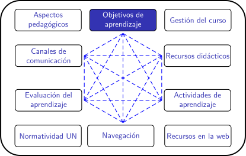

Cursos en la UN para el periodo 2020-02
Objetivos de aprendizaje
¿Qué es un objetivo de aprendizaje?
Es una declaración clara, corta y concisa de aquello que se espera que un estudiante sea capaz de hacer la finalizar una lección o un curso, gracias a esa lección o curso.
Un ejemplo: suponga un curso de Historia del Arte en el que se estudia el periodo barroco en América Latina. Uno de los objetivos de aprendizaje podría ser:
"Identificar los elementos distintivos del arte barroco presentes en la escuela latinomericana"
Una primera pista para la redacción de los objetivos de aprendizaje es la siguiente: en un syllabus, a cada objetivo de aprendizaje debe poder anteponerse una frase como esta: "Al finalizar este curso, usted estará en capacidad de...".
Si se presentan adecuadamente, cada estudiante debería asumir los objetivos de aprendizaje como retos personales; cada estudiante debería poder leerlos anteponiéndole una frase como: "Al finalizar este curso, yo debo estar en capacidad de..."
Estructura de un objetivo de aprendizaje
Un objetivo de aprendizaje tiene 3 elementos. Para presentarlos, veamos 'en colores' el objetivo del ejemplo:
"Identificar los elementos distintivos del arte barroco presentes en la escuela latinomericana"<
- El tema sobre el que se quiere aprender. 'Tema' tiene aquí un sentido amplio que abarca conocimientos, habilidades, actitudes.
- El tipo de destreza que se desea adquirir o desarrollar.
- Los elementos que contextualizan el aprendizaje esperado.
el saber, el saber hacer, y el ser
¿Para qué sirven los Objetivos de Aprendizaje?
Los objetivos de aprendizaje (OA) son el primer elemento a considerar en diseño curricular, ya que a partir de estos es posible identificar qué se espera que los estudiantes aprendan una vez han cursado la asignatura. Es a partir de la definición de estos objetivos que resulta posible articular la planeación de las actividades de aprendizaje, la estrategia de evaluación y retroalimentación y los demás componentes del diseño del curso.
Formular adecuadamente los objetivos de aprendizaje y darlos a conocer de forma anticipada a los estudiantes permite que el proceso de aprendizaje sea transparente. Así, tanto los estudiantes como los docentes pueden establecer qué experiencias y estrategias de aprendizaje van a permitir un progreso más efectivo en el logro de dichos objetivos.
¿Qué caracteriza un buen objetivo de aprendizaje?
Los objetivos de aprendizaje deben ser el corazón de la planificación de un curso o de una lección. Su elaboración es, entonces, una tarea delicada que suele requerir reflexión, debate y unas cuantas iteraciones.
Un buen objetivo de aprendizaje debe:
- Estar centrado en el aprendizaje.
- Ser demostrable. Nota:
- Ser medible.
- Ser alcanzable.
- Ser claro y conciso
- Ser significativo
- Ser relevante
El video de abajo, preparado por la Dirección Académica de la sede Bogotá, aclara estos criterios. Como fichero adjunto encontrará una tabla para aplicarlos a su curso.
Estos criterios son exigentes. Para satisfacerlos hay que prestar mucha atención a la selección del verbo que identifica el tipo de destreza deseada.
¿Son los mismos 'objetivos del curso'?
No. En términos generales, los 'objetivos del curso' suelen redactarse como 'objetivos de enseñanza'. Enseñanza y aprendizaje son dos conceptos complementarios, pero diferentes.
A manera de ejemplo: supóngase un curso de 'introducción a la filosofía de las ciencias sociales'. Los dos tipos de objetivos se muestran en la siguiente tabla con ejemplos ficticios.
| Objetivo del curso | Objetivo de aprendizaje |
| El objetivo del curso es introducirlo en algunos conceptos y preguntas elementales de la Filosofía de las Ciencias Sociales | Al finalizar el curso usted estará en capacidad de describir las preguntas y conceptos fundamentales de la Filosofía de las Ciencias Sociales |
Nótese que en el ejemplo anterior:
- El protagonista del cumplimiento del objetivo cambia: ¿Quién debe 'introducirlo'?: el docente ¿Quién debe ganar la 'capacidad'? el estudiante.
- El objetivo de aprendizaje mismo nos da pistas directas sobre cómo evaluar si se alcanzó o no: a través de una actividad en la que el estudiante 'describa las preguntas y conceptos fundamentales' de que trata el curso.
Otros ejemplos de comparación entre objetivos de curso y de aprendizaje pueden encontrarse en esta página.
Ficheros adjuntos
Tabla de Verificación de Objetivos de Aprendizaje
Obra publicada con Licencia Creative Commons Reconocimiento Compartir igual 4.0